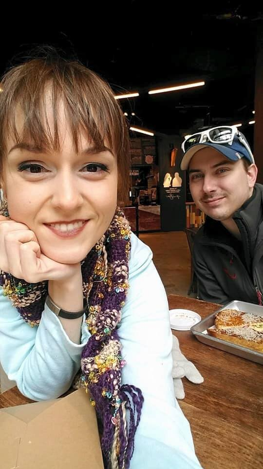
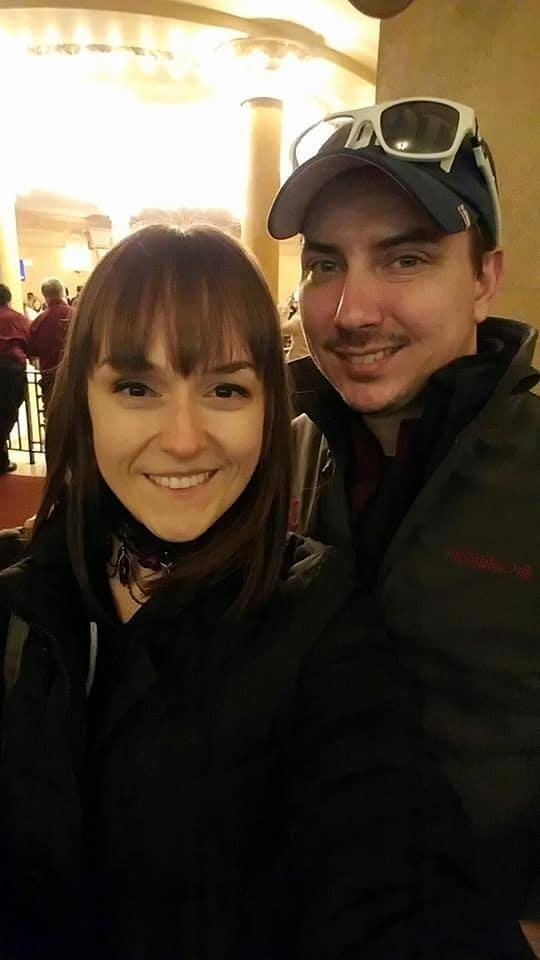
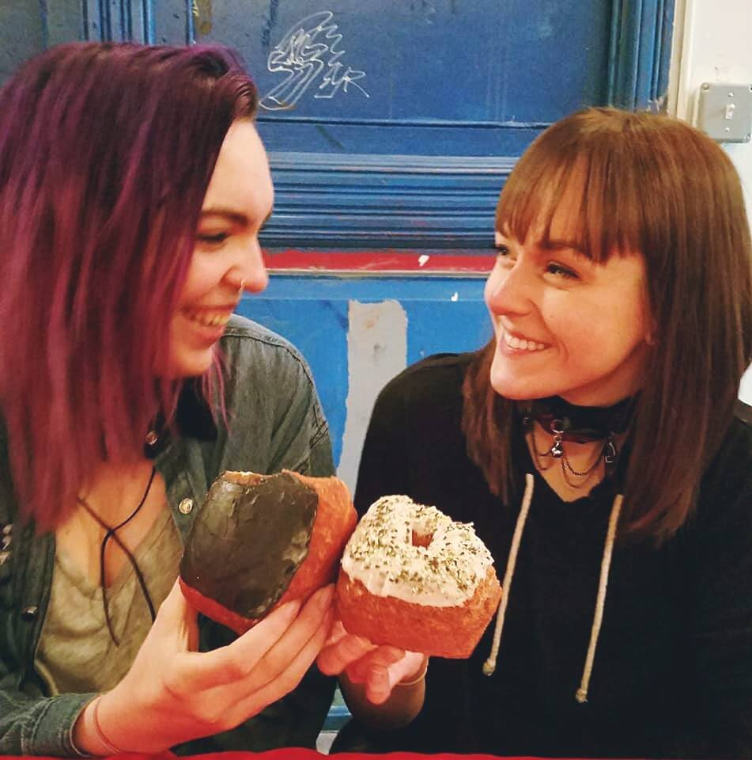
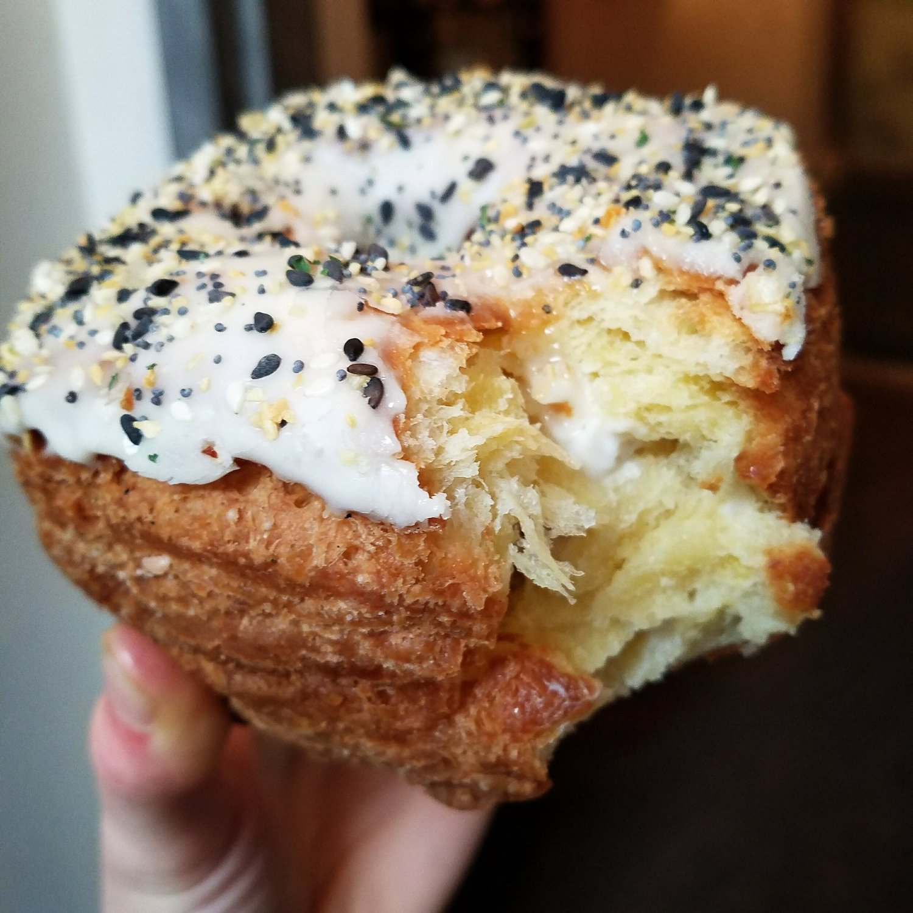

NYC 2017 + Vegan Restaurants




Do you remember when I went to NYC last year? It's okay if you don't :p but I definitely do. It was my first time ever to New York City, and I was so excited to be there and do all of the touristy things and eat all of the vegan food. I treated it as a trip I knew I may never have again, since it took me until age 24 to go hah. But surprise surprise! I went back just a year later!
I went for a few very good reasons. Nick and I wanted to go on a trip; he's been to New York before and really likes it so we knew we'd enjoy it! Additionally, my cousin lives there and I wanted to see her. Another strong driving factor was the fact that my good good friend Leah is staying in the city again for an internship. So of course I had to take the opportunity to see her if I could!
Since I knocked out most of the touristy things last year, this trip was mostly full of roaming around, eating food, and taking things as they come. One thing we did but I never did last year was walking the High Line and exploring Chelsea Market. It was soo nice outside and such a pleasant walk. Super last-minute (I was feeling sick and couldn't walk anymore), Nick got tickets to see Cirque du Soleil on broadway!! It was soo cool since I have never but have always wanted to see Cirque du Soleil. From his review, it was a mix between the classic Cirque du Soleil style and classic broadway style. It was awesome!
Another highlight from the trip was going to an all vegan pop up shop in Brooklyn. I was really hoping to get some Peaceful Provisions donuts while I was up in NYC, but it really came down to luck & timing since they only sell at pop up shops every 2-3 weeks. Lucky enough, one fell on the weekend we were there!!!! So we went to the shop, loaded up on donuts, and stared in awe over all of the amazing vegan shops. I got to meet Vegederrian after pretending we are IG besties for a while now - shh don't tell him. It is always really neat to meet people after interacting solely on social media!
One thing that went over my head but was a "to-do" on Nick's list was to visit McGee's, the bar that How I Met Your Mother is based off of. I didn't understand anything inside; it looked like a typical bar to me? But it sounded like a neat place hah. As long as fans like it! We also last-minute strolled into Trump Tower when we saw it close to our location. It was neat to see how many people were exploring inside. It was pretty with a waterfall and copper all over, and a Starbucks on the top floor! Woooo top secret spot.
We stayed in a really cool pod-style, japanese themed hotel called Yotel. I personally loved the style of it - basically everything is white with purple led lights. It was decently priced and a good location close enough to the subway but not directly in the center of the city traffic.
I posted a video of the trip, so check that video on youtube! In it, I listed the names + locations of the vegan restaurants I ate at. I've also got full reviews + pictures for the restaurants and what was ordered on Yelp if you'd like more technical details. :)
But that's it! If you have any questions, just ask! It was whirlwind of a trip so I hope I'm not leaving out anything drastically important. Hopefully I will be returning very very soon because the city is growing on me and I miss it.
NYC Vegan Restaurants I ate at
Dirt Candy (high end vegetarian + vegan tapas)
Red Bamboo
Sweets by CHLOE
Cinnamon Snail
Peaceful Provisions (huge vegan donuts that are only sold at vegan pop up markets)
Vanessa's Dumplings (lots of non-vegan stuff but the sesame pancake was vegan and the veggie steamed dumplings)
Dun-Well Doughnuts
Souen (vegan + fish. They have amazing kabocha)
Champ's Diner (I could eat here 4x in a week)
Beyond Sushi (all vegan sushi)
Pick a Bagel (bagels are usually vegan + a large selection of tofu spreads or tofutti cream cheese)
Restaurants I wanted to eat at but didn’t get to
Little Choc Apothecary
The Bagel Store (because apparently their rainbow bagels use egg now and aren't vegan. Glad I tried them last year.)
Go Zen
Modern Love
Urban Vegan Kitchen
Blossom du Jour
The Candle Café
Orchard Grocer (I wanted to try their carrot "salmon" lox and their reuben!)